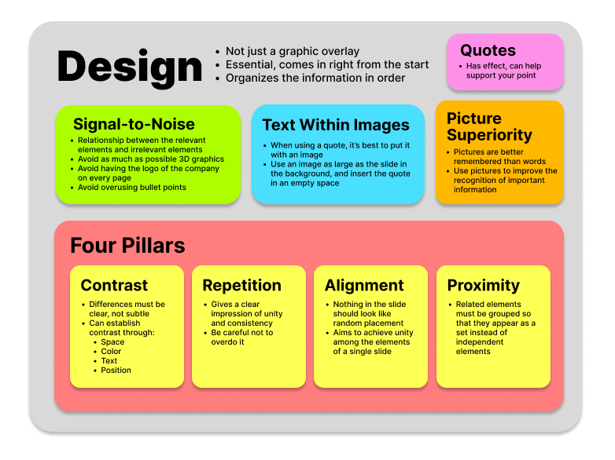

The relationships I mapped in the concept map describe the main topics discussed in chapter 6 of Presentation Zen. The overaching theme is that design is essential in slideshows; it's not just an afterthought. 4 of the main topics discussed relating to design were signal-to-noise, quotes, text within images, and picture superiority. Those are inside of the design box, meaning they are included within the topic space. The four pillars were also heavily discussed, which is in its own box. These themes are important in my professional life later on because creating visually appealing slideshows is a great skill to have. I had to create a lot of slideshows for my summer internship last year, so I can see the importance in ideas like these.
